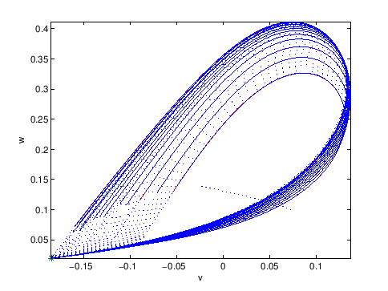

Next: Heteroclinic orbits (Het) Up: Continuation of homoclinic and Previous: Homoclinic-to-Saddle-Node initialization (HSN) Contents
>> init; >> p=[0.11047;0.1];ap1=[1]; >> [x0,v0]=init_EP_EP(@MLfast,[0.047222;0.32564],p,ap1); >> opt=contset;opt=contset(opt,'Singularities',1); >> opt=contset(opt,'MaxNumPoints',65); >> opt=contset(opt,'MinStepSize',0.00001); >> opt=contset(opt,'MaxStepSize',0.01); >> opt=contset(opt,'Backward',1); >> [x,v,s,h,f]=cont(@equilibrium,x0,[],opt); first point found tangent vector to first point found label = H , x = ( 0.036756 0.294770 0.075659 ) First Lyapunov coefficient = 8.234573e+000 label = LP, x = ( -0.033738 0.136501 -0.020727 ) a=-1.036706e+001 label = H , x = ( -0.119894 0.045956 0.033207 ) Neutral saddle label = LP, x = ( -0.244915 0.008514 0.083257 ) a=2.697414e+000 elapsed time = 0.4 secs npoints curve = 65 >> x1=x(1:2,s(2).index);p=[x(end,s(2).index);0.1]; >> [x0,v0]=init_H_LC(@MLfast,x1,p,ap1,0.0001,30,4); >> opt=contset; >> opt=contset(opt,'MaxStepSize',1); >> opt=contset(opt,'IgnoreSingularity',1); >> opt=contset(opt,'Singularities',1); >> opt=contset(opt,'MaxNumPoints',200); >> [x2,v2,s2,h2,f2]=cont(@limitcycle,x0,v0,opt); first point found tangent vector to first point found Limit point cycle (period = 4.222011e+000, parameter = 8.456948e-002) Normal form coefficient = -2.334576e-001 Limit point cycle (period = 5.653399e+001, parameter = 7.293070e-002) Normal form coefficient = 1.132235e+000 Limit point cycle (period = 5.739877e+001, parameter = 7.293070e-002) Normal form coefficient = 3.266287e+000 Limit point cycle (period = 8.938964e+001, parameter = 7.293071e-002) Normal form coefficient = -1.537206e-001 elapsed time = 86.6 secs npoints curve = 200 >> p(ap1) = x2(end,end); >> T = x2(end-1,end)/2; >> [x0,v0]=init_LC_Hom(@MLfast, x2(:,end), s2(:,end), p, [1 2], 40, 4,... >> [0 1 1], T, 0.01, 0.01); >> opt=contset(opt,'MaxNumPoints',15); >> [xh,vh,sh,hh,fh] = cont(@homoclinic,x0,v0,opt); first point found tangent vector to first point found elapsed time = 4.4 secs npoints curve = 15 >> plotcycle(xh,vh,sh,[1 2]);
The above computations can be done by running the script homoc1. The picture is presented in Figure 31. Similar tests can be done by using the testrun testmyml.
|  |